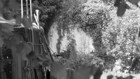

Notre Dame des Friches (for Piero Heliczer)
Evelyn Rüsseler aka Bear Boy – Deutschland 2015
1 min. – HD – ohne Dialoge
P: Beastie Production Berlin
„… the site of the first house of Piero Heliczer at Préaux-du-Perche, Normandy in May, 2015. One last wall standing, overgrown with ivy, witness of former presence of the poet...his printing press peeking out of the high grass...
A new residencial use is palpable, a yurt, smoke of a fire burnt down to its ashes…
We start re-imagining the poets´ presence, the sound of a mobylette, the laughing of some English girls ? Time comes to a halt... Moments of remembrance.... on a bright spring day – clearly he fell in love with this remote spot, made it his `loco amoenus´….“ – Evelyn Rüsseler aka Bear Boy
dienstag 13 okt 22.30 uhr werkstattkino
Evelyn Rüsseler aka Bear Boy (1961) macht Experimentalfilme und-Videos über Freunde, Tierverwandlungen und tote Dichter, schreibt Romane und performt die erdachten Tierfiguren. Sie lebt seit 2003 in Berlin, München und an der Ostseeküste. Diverse Kurzfilme. Sie ist seit der ersten Stunde UNDERDOX-Filmkünstlerin. Siehe auch WILHELM HEIN.